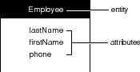
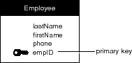
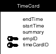

PATH
WebObjects 4.0 Documentation >
EOF Developer's Guide
 Table of Contents
Table of Contents  Previous Section
Previous Section
Entities and Attributes
Entities and attributes represent structures that contain data. In a relational database, entities represent tables; an entity's attributes represent the table's columns. A sample table that could be represented by an Employee entity is shown below:
Figure 53. The "EMPLOYEE" Table
Each row in the table can be thought of as an "instance of an entity." Thus, an employee record is called an instance of the Employee entity. In the Enterprise Objects Framework, each instance of an entity typically maps to one enterprise object.
Contained within an entity is a list of features, or attributes, of the thing that's being modeled. The Employee entity would contain attributes such as the employee's last name, first name, phone number, and so on. This simple model is depicted in Figure 54.

Figure 54. The Employee Entity
In traditional E-R modeling, each entity represents all or part of one database table. The Enterprise Objects Framework allows you to go beyond this, however, by adding attributes to an entity that actually reflect data in other, related tables (the process of adding attributes from other entities is known as flattening). An entity in the Framework is analogous to a database view; in a sense it's a virtual table that maps to one or more real database tables.
Entities can also have derived attributes, which do not correspond directly to any of the columns in a database table. Frequently, these are computed from one or more attributes. For instance, a derived attribute could be used to automatically compute an employee's annual salary by multiplying his monthly salary (obtained from a simple monthly salary attribute) by twelve.
Enterprise objects are based on entities. Typically, each of an entity's properties are represented in the enterprise object as instance variables (although this is not a requirement). Enterprise objects can have instance variables that do not correspond to any of the entity's properties.
Names and the Data Dictionary
The table and column names shown in Figure 54 are the names that a hypothetical server might use. The collection of a server's table and column names is called its data dictionary. In your application, you can't refer directly to items in the server's data dictionary. To identify the server's "EMPLOYEE" table, for example, you must refer to the entity that represents the table-in other words, the Employee entity. The correspondence between the server's names and the names of the modeling objects that you create isn't coincidental; you have to tell each modeling object which data dictionary name it represents. This is done as you create the model.
Server names (in other words, names in a server's data dictionary) can be case-insensitive (depending on the database server). The names of modeling objects, on the other hand, are always case-sensitive. Throughout this chapter (and the rest of this manual) modeling objects are given names that match, except for case, the corresponding dictionary names (given the hypothetical relational database server that's used in the examples). To further distinguish the two, server names are uppercase and quoted-for example, the "EMPLOYEE" table-while modeling object names use a different font: AnEntity, anAttribute, aRelationship. Note that entity names are capitalized like class names, while attribute and relationship names are lowercase with intervening capital letters. Attributes are occasionally identified by their definition, with the entity and attribute names connected by a period: AnEntity.anAttribute.
Attribute Data
When you use an attribute to identify a particular datum in a table, you refer to the value for that attribute, given a particular record. An employee's phone number, for example, is the value for the Employee.phone attribute. The "value for an attribute" construction enforces the notion that the attribute itself doesn't contain data.
Not every employee will necessarily have a phone number. If a record's value for a particular attribute can't be determined (or doesn't exist), the value is said to be NULL.
Data Types
Every database attribute is assigned a data type (such as int, String, and so on). All values for a particular attribute take the data type of that attribute. In other words, the values in a particular column are all of the same type. When an enterprise object is fetched from the database, the value for each attribute is converted from its external data type into a suitable scalar or value class type that can be used by the enterprise object. For example, a Sybase varchar would become a java.lang.String (or NSString in Objective-C) in an enterprise object.
None of the candidate data types allow lists of data; the value for a particular attribute in a particular record must be a single datum. Thus, in addition to indicating that an employee has a last name, a first name, and a phone number, the diagram in Figure 54 indicates that every employee has a single last name, a single first name, and a single phone number (where any of these single values can be NULL). This "atomic attribute rule" will become particularly important in the discussion of relationships, later in this chapter.
Attribute Types
An attribute may be simple, derived, or flattened. A simple attribute corresponds to a single column in the database, and may be read or updated directly from or to the database.
A derived attribute doesn't correspond to a single database column and is usually based on some other attribute, which is modified in some way. For example, if an Employee entity has a simple monthly salary attribute, you could define a derived annualSalary attribute as "salary * 12". Derived attributes, since they don't correspond to real values in the database, are effectively read-only; it makes no sense to write a derived value.
A flattened attribute (which, in the Enterprise Objects Framework, is a special type of derived attribute) is actually an attribute of some other entity reached through a relationship. A flattened attribute's definition consists of one or more relationships separated by periods, ending in an attribute name. For example, if the Employee entity has the relationship toDepartment and the Department entity has the attribute departmentName, you can define employeeDeptName as an attribute of your Employee entity by creating an attribute for it with a definition of "toDepartment.departmentName".
The Primary Key
Each of the records in a table must be unique-no two records can contain exactly the same values. To ensure this, each entity must contain an attribute that's guaranteed to represent a unique value for each record. This attribute is called the entity's primary key.
The Employee entity, as defined above, doesn't contain a primary key. If the company were to hire two employees with the same name, the records for those two employees wouldn't be distinguishable from each other. To amend this, a primary key called empID-an attribute for which each distinct employee has a unique value-is added to the Employee entity. Figure 55 shows the amended entity; the primary key is marked with a key symbol.

Figure 55. The Employee Entity with a Primary Key
The value for a primary key may or may not represent a real-world value. The empID attribute used above may, for instance, contain the employee's social security number. Or, it may just contain an arbitrary value used only to distinguish a particular record from other employee records.
An entity can contain any number of attributes that represent unique data, but only one of them needs to be declared as a primary key. Declaring more than one as a primary key creates a compound primary key.
Compound Primary Keys
Typically, the primary key for an entity is a single attribute. However, you can designate a combination of attributes as a compound primary key. In a compound primary key, the value for any one of the constituent attributes isn't necessarily unique, but the combination of all of them is.
For example, consider employee time cards. Every time card could be uniquely identified through a combination of its employee number and an additional time card number (to distinguish multiple cards for the same employee). Taken on their own, neither of these numbers is necessarily unique for all time cards, but the combination of the two is. Figure 56 illustrates a TimeCard entity in which the attributes empID and timeCardID form a compound primary key.

Figure 56. An Entity with a Compound Primary Key
Table of Contents  Next Section
Next Section